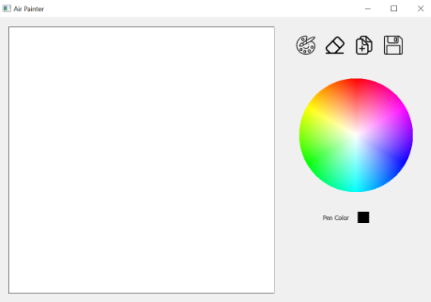
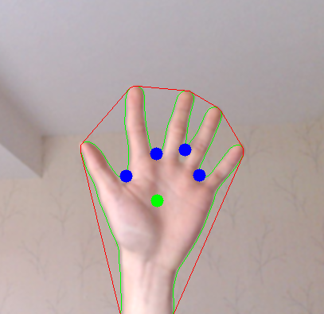

Air Painter is a project that allows users to make a quick sketch with the use of hand gestures. With your hands, users can freely manipulate a canvas and develop their drawings. Through computer vision, the system recognizes gestures and the hand’s location to create the drawing. The project was inspired by our interest in computer vision and desire to apply it in a visual project.
Introduction
The project consists of two main components: the graphical user interface (GUI) and the computer vision (CV) logic. The GUI develops the canvas for users to create their drawing. Using PyQt5, the canvas is developed to allow users to draw, erase, reset the page/create a new canvas, save the canvas image, change the pen color, and change the pen size. The GUI is separated into the canvas view and toolbar view. These two views are swapped between each other so that the user can focus on solely drawing or changing canvas settings. The display can be seen in fig. 1. The CV logic shows a window that detects the user’s hands. The window is shown for users to easily reference the location of their hands and whether it is within the camera frame. OpenCV is used to detect the location and gestures of the hands and this data is then sent to the GUI. The CV logic window can be seen in fig. 2.
GUI display
CV display
Overall, the two components are connected through pipes. Using multiprocessing, both the GUI and CV logic run in parallel. Data from the CV window is sent to the GUI with the use of pipes. The GUI consists of the canvas window as well as a thread that receives that data from the pipe. Once the thread receives data, it signals the GUI to update the display on the canvas window.
The project is set up with the Raspberry Pi 3B (Pi), c920 web camera, and a monitor. The Raspberry Pi is connected to the c920 web camera through an USB port and the monitor is connected through the HDMI port. We opted to use a webcam rather than the provided camera module for better video quality.
To run the system, in a terminal you would type python main.py. The parameters for the width and height of the canvas can be adjusted in integration.py if desired. Upon starting the system, users would need to set the background by selecting the CV detection window and pressing b on the keyboard. If the detection seems to be detecting random contours, users can select r to reset the background and b to set it again.
Design & Testing: Canvas GUI
This section discusses the development of the GUI component of the project and how we developed the canvas. The section will focus mostly on the design and layout of the GUI. The design went through multiple iterations before reaching the finalized design. All the features on the GUI are tested without the CV component at first to ensure that they function properly and after integrating both the CV component and GUI, we ensure that the CV logic can properly trigger GUI components.
First Iteration
During the first iteration of the GUI, we explore how PyQt5 could be used to layout certain components. Using widgets from PyQt5, we developed the basic functionality for the pen and eraser. The canvas is created by creating a blank QPixmap within a QLabel object. These are PyQt5 objects that define a blank image for users to edit on the GUI. When a mouse drag event occurs, the GUI will be notified with the mouse coordinates. These coordinates are used to draw lines with the pen. The pen draws lines on the canvas by connecting the last detected point with the current detected point. The last coordinate is stored as an attribute self.past_event in the GUI. Once the mouse is released, the GUI sets self.past_event = None to ensure that lines are only connected if they are drawn during the same mouse drag event. The eraser tool is similar to the pen tool and simply "draws" with the background color. The display of the GUI's first iteration can be seen in fig. 3.
First iteration of GUI
Second Iteration
During the second iteration, we built most of the tools that we planned to implement. The pen and eraser tools remain unchanged from the first iteration. Additionally, icons are added for the buttons paint, erase, new page, save image, shown from left to right in fig. 4. New page resets the canvas label to a blank white state. Save image saves the current drawing in the white canvas area to a .jpg file named by the current date and time in the current directory. One of the largest changes since the first iteration would be the addition of the color picker. The color picker is drawn when the GUI is initialized. This causes the GUI to load slightly slower than the first iteration since it has to initialize the color picker. Code from StackOverflow is referenced to develop the color picker. On the GUI, when a mouse click event occurs in the color picker, the color of the pixel at the mouse coordinate is used as the next pen color. To implement this, we map the mouse coordinate to a coordinate within the label of the color wheel. The top-left of the color wheel area corresponds to (0,0) local to this area. We calculate the distance of the mouse coordinate is from the center of the color wheel and if the distance is less than the color wheel radius, the system will proceed to find the color of the selected pixel location. Afterwards, the color cube next to the text "Pen Color" is set to the current pen color so users can check the pen color anytime.

Second iteration of GUI
To test the mentioned features, we ensured that the buttons carried out the correct functionality. We then selected several colors from the color picker and verified that the color cube updated with the selected color. Then, we drew with the pen to ensure that the color was correct as well.
Final Iteration
The final iteration is the finalized GUI and an example of the GUI at runtime can be seen in fig. 1. In addition to the features created in iteration 2, we also added a luminosity bar. The luminosity bar is added since the color wheel has certain limits in colors (i.e. black cannot be selected from just the color wheel). To create this feature, we defined a Qlabel and divided it into several blocks of color. For each block, a rectangle is drawn by varying the luminosity in the HSL (hue, saturation, luminosity) object. Additionally, we added the ability for users to switch between three pen sizes: 3px, 8px, and 15px. These sizes can only be adjusted by hand gestures and there are no corresponding GUI elements to prevent the GUI from being over-crowded. A command label is also added so that the users know what the last executed command is (i.e. what button was last pressed). This provides feedback for the user when they are manipulating the canvas from a distance with their hands and lets users know that their button presses or actions are being registered.
To test all these features, we ensured that they performed the correct actions. The luminosity bar can be verified once the GUI is displayed, since, like the color wheel, it is drawn at initialization. We checked that once the a color is selected from the luminosity bar, the pen color changes correspondingly as well. We verified that the command label changed properly when each button is pressed and that the pen size also adjusted when they are artificially set.
One of the biggest changes from past iterations is the design of the GUI. We created two views that users can toggle between: canvas view and toolbar view. The purpose of the canvas view is for the user to draw on a large white canvas. The purpose of the toolbar view is for users to use the provided tools to manipulate the image. We made this UI change since most users will not be manipulating tools while they are drawing on the screen. We also wanted to enlarge the screen to give users a larger area to draw on.
Lastly, we designed the GUI so that it can be resized on initialization by setting the HEIGHT and WIDTH dimensions in integration.py. The GUI is designed for a window ratio of a 320 x 240. To calculate some offsets, the window should not be resized at runtime or the locations of some of the objects will look offset and the color picker and luminosity bar will not pick up the correct colors.
GUI Layout Overview
The layout overview in fig. 5 correlates with the GUI shown in fig. 1. The diagram outlines the main containers and sections created with PyQt5. There are a few containers not outlined; however, the purpose of those containers is for styling. All sections are created by initializing a QFrame and associating the layout with either a horizontal or vertical box layout (QHBoxLayout or QBoxLayout). In these layouts, widgets can only be placed horizontally or vertically, which caused the need to add multiple layouts so that nested positioning could be displayed. For example, in the canvas view, the main canvas container is a vertical layout; however, an additional horizontal layout is necessary to space the command label and toggle button horizontally. The two views are both enclosed in self.main_container, which is the central widget for the GUI. In PyQt5, widgets are UI components that users can interact with. The two views are a set of stacked widgets, where only one object in the stack will show at a time, either the canvas widgets or the toolbar widgets. All the buttons and labels seen in either view are in containers or part of layouts nested in canvas_container or tool_container. The buttons are created as QAction objects and the labels are created with QLabels. Specifically, the canvas, color wheel, and luminosity bar are created in QPixmap objects that are displayed in QLabel objects. The initialization can be found in the MainWindow.initialize() located in integration.py. The styling of the GUI is also done in this file.
GUI diagram
Issues
The biggest issue we ran into were errors when loading the GUI on the piTFT. The GUI could be run on the Pi in desktop mode; however, it would crash upon running it on the piTFT. We tried running the program with sudo and ensured that all libraries were installed with sudo, but we were unable to get past the error "QXcbConnection: Could not connect to display Could not connect to any X display". We looked online for solutions but did not find anything that worked. We also tried using PyQt4 instead and tested with a simple display script; however, we ran into a similar error. After consulting with the professor, we decided to use the monitor as our main display instead since the program runs properly on the Pi.
Another issue, we ran into was correctly offsetting the pixels so that we could calculate coordinates local to specific labels for the color wheel and the luminosity bar. We added the function MainWindow.setLayoutStyling(self, layout) that takes in a layout and sets the margins and spacing to 0. One of the issues was that layouts were given automatic padding, making it hard to calculate the exact amount of offset. Lastly, we managed to calculate the offset based on the window's size, the object's dimensions, and the dimensions of objects on top of it. This was necessary in the toolbar view where all the objects are stacked vertically so that we would only look at the dimensions of objects on top of selected object. We tested that a mouse click in the color wheel and luminosity wheel would be selected correctly by looking at the pen color change. We resized the window height and width dimensions at initialization to ensure that the proper color would still be registered. Since the offset calculation is defined upon initialization, if the window is resized after the canvas is initialized, colors may not be detected properly. Instead, users should define the initial height and width in integration.py before running the program.
Design & Testing: CV Logic
There are several steps in the computer vision pipeline for this
project. The first step is to detect the hand from the video stream and
segment
it from the
background. After detecting the hand, the contours of the hand are
extracted using OpenCV. With this information, the number of fingers as
well as the location of the tip of the pointer finger can be
calculated. A bounding rectangle is placed in the camera to
limit the points that are sent to the canvas. The final step is to
optimize the performance of this pipeline on the Raspberry Pi by
utilizing threading.
Hand Detection and Background Segmentation
The first step in this pipeline is detecting the hand. There were
several options we decided to explore. The first option we explored
was to use a pre-existing neural network model to detect our hand. After much
searching, we found a model called OpenPose which was developed by
the Perceptual Computing Lab at Carnegie Mellon University.
OpenPose is a real-time multi-person estimation system, which was later
extended to work with hands and other body parts. Setting it up was
very simple and the results of the OpenPose model running on input
from the camera is shown below in fig. 6.
Classification Results
with OpenPose Model
OpenPose Times
As shown in fig.6, the model worked extremely well and is able
to detect all the key points on the hand. Key points in this context refer to the joints on the hand. While the model worked well, there was one critical
downside: the runtime. The model works
by taking an image as input and runs the image through the model
to get the outputs. For pictures or videos, this model works well but
for our real-time application, it was simply too slow. For 720p images,
running the image through the model took over 3 seconds. Even after we
reduced the resolution of the webcam video down to 90p, we were still
unable to get the model to classify the camera data fast enough.
Running the model on a desktop with an Intel I7-6700K CPU running at an
overclocked 4.6 GHz, it took ~1.6 seconds to
run a frame through the forward pass. The times are shown in fig. 7. This meant that if we used this
model, we would have a throughput of less than 1 frame per second.
To increase the throughput, we would need to use CUDA acceleration. Considering that
the Raspberry Pi's CPU is much less powerful than an I7-6700K and that it
does not have an GPU, there was no possible way for us to
use OpenPose on the Pi. Thus, we scrapped this idea and moved
onto an implementations using OpenCV.
Moving towards an OpenCV implementation, we first needed to find a way to isolate the hand in the image. There were several options we chose to explore. The first option was to do background segmentation. We used OpenCV's built in background subtraction operators such as cv2.BackgroundSubtractorMOG2. We ran into an issue quickly with these background segmentation operators. By default, they take a running average of the images seen so far in the video to create the background. The background detector was able to detect a moving hand, but once the hand stopped moving, the hand slowly became a part of the background and disappeared. Since we need to detect the hand
in the frame, even if it's still, we decided to move on from this idea. As discussed later in this section, however, we revisited this method and found that by changing certain settings, we were able to fix this running average issue.
Next, we researched OpenCV’s cv2.backprojection function. This
function separates the image into the foreground and background based on
a user-defined histogram. A histogram in this case can be thought of as a
graph or spectrum of intensities in the region of interest. It contains a
count of the number of pixels for each possible value of intensity. In
order to segment the hand, a "skin"-based histogram needed to be created
which first required capturing intensity values of the user's skin. This
was accomplished by prompting the user to place their hand in a specific
region in the camera image as shown in fig. 8.
After sampling the HSV colors in the four boxes, the histogram is
built using cv2.CalcHist. This
histogram was passed into cv2.calcBackProject which produced a
binarized image. Filtering and thresholding were also applied to try and
isolate the skin regions. However, this
produced very poor results due to having too many false positives.
The final approach we explored was to do manual thresholding and
segmentation rather than using built in functions. After capturing
the values of the skin color using the process mentioned above,
a range of HSV values were calculated by taking the minimum and
maximum value in the four boxes and adding some constant value. This
constant was tuned for results. From here, the HSV ranges were passed
into cv2.inRange, which binarizes the input image based on the
input range. Values within the range map to 1 while all other values
map to 0. The result is shown in fig. 9.
Prompt for User's Hand
Manual Threshold
While the manual thresholding approach seemed promising, it caused
much more difficulties than expected. As shown in fig. 9,
there is a lot of noise in the image. When trying to find the contours and
defects (discussed later), all this noise made it impossible
to accurately find the contour and defects of the hand. The
convex hull that was found would include much of the background
instead of just the hand and arm. Gaussian blurring and morphological
transformations were used to try and solve this issue, but so much
blurring is needed that it distorts the image. To count the
fingers, the defects need to be detected in the space between the
fingers. However, when too much blurring or morphological transforms
are used, the hand almost morphs into a single block, making it very
difficult to detect hands. Another issue with this method is
inaccurate segmentation of the hand if the color of the background is
similar in color to the skin of the user. This results in the
algorithm detecting much of the background as being part of the hand.
This can also occur if there is too much external light so the entire
scene blends in color. Due to all these issues, we couldn't use this
method.
The current method we are using is one we previously discarded.
We revisited using OpenCV's built-in background subtractor
functions. By setting the learning rate to 0, the background
subtractor would not update. This allows us to easily detect the
hand, even when still, after setting up the background with a
frame that does not include the hand.
Before moving on, we had to resolve the issue of the head being
detected. Unless the head was held perfectly still, the head
would be detected as part of the foreground. This causes
issues as the goal is only to detect the hand. Our original
solution was to use OpenCV's built-in face detectors and to
zero-out the pixels corresponding to the face. However, the
bounding box found by those models doesn't completely bound
the face. To resolve this, we simply require the user to
orient the camera so that their face is not image.
Our current system shows the video stream to the user and prompts them to
capture the background with the b key as shown in fig. 10.
If the background is not set properly or some lighting changes occur
that affects the background, the background can be reset by pressing
r. The user is then prompted to set the background as
before. To exit the program, the users can press q.
After applying the background subtractor as well as some filtering and
thresholding, the binarized image can be seen in fig. 11. As seen in the figure, there is no noise in the image which makes detecting contours extremely easy.
Contour Detection
The next step is to find the contour of the hand and the arm if they are in
the image. The contour is simply the curve joining the set of points
making up the boundary of the object of interest. To find the contours of
any objects in the image, the OpenCV function cv2.findContours is used. Given a binary image as well as some other
parameters, it returns a list of contours as well as a list representing
the hierarchy of the contours (in case some contours are contained inside
others). Assuming the background is set correctly, the hand corresponds to
the contour with the largest area which was easy to find in the list.
Prompt to Set Background
Binary Image
Convex Hull, Defects, and Counting Fingers
We find the convex hull of the hand using cv2.ConvexHull().
For purposes detailed in later sections, we also find the centroid of the
convex hull using the image moments found with cv2.moments().
Next, the defects of the hand contour are found.
Defects are any deviations found in the contour from the surrounding
convex hull. Again, we use a OpenCV function cv2.convexityDefects(),
which gives us a list of information about each defect given a contour and
its corresponding convex hull. Each defect in OpenCV is described by four
values: the indices of the start point, end point,
farthest point of the contour that make up the defect, and the
distance from the farthest contour point and the hull. For example, in
fig. 12, the red line is the convex hull of the hand shown and
the green, red, and blue dots correspond to the start, end, and
farthest point of the defect.
Start, End, and Farthest
Point of Defect
Defects of Hand

Defects Between Hands
Using the defects to find the fingers is a bit complicated due to
OpenCV detecting many defects as shown in fig. 13.
In order to count the fingers using
defects, we did some researching online and found that a common approach was to use the defects
in the spaces between the fingers to count the defects. We followed this
approach and took inspiration from a
tutorial for Real-time Finger Detection. The
method involves iterating over each defect and using the cosine angle
theorem to calculate the angle made up by the vector pointing from the
farthest point to the start point of the defect and the vector pointing
from the farthest point to the end point. NumPy's vectorization allows
us to quickly calculate these angles. From here, the defects that have
angles less than 90° correspond to the regions
between fingers. As shown in fig. 14 above, this method accurately finds
the defects between the fingers.
Given the number of defects between hands, counting the number of fingers
is rather simple. When there are 1-4 defects, this corresponds to 2-5
fingers up, respectively. The issue is detecting when there are 0 or 1
fingers up as both correspond to 0 defects being detected. To
resolve this, we make use of the centroid of the contour that we
previously computed. When there are 0 defects, we calculate the
distance of the
furthest defect from the centroid. We also limit the search to defects
that are above the centroid to avoid false positives that occur
below the centroid. The pointer finger should always be above the hand.
If this distance is larger than some
preset distance, then the system detects that 1 finger is held up. The
farthest defect also happens to be the fingertip. We track this point
to draw on the canvas in later steps. The preset distance was
determined by testing different distances and determining how far the
finger had to be extended for it to consider the hand as holding up 1
finger. We adjusted this distance to our liking. We investigated
adjusting this preset distance
dynamically depending on how much of the arm is in the image. The
more of the arm is in the image, the further the centroid goes down the
arm as the arm is included in the contour. Consequently, the distance to
differentiate between 0 and 1 finger needs to be larger when our hand
is near the top of the screen than when near the bottom. In our
investigation, we found that the way we adjust this distance differed
depending on the camera's resolution. Rather than dealing with this
extra complexity, we decided to stick with our original approach of
setting an adjustable pre-set distance as its much easier to adjust
when changing resolution. Fig 15.
shows the system recognizing 0 and 1 finger.
0 vs. 1 Finger
From this point, we tested our detection by printing out the number of
fingers detected by the system. By accurately detecting the
fingers, we could map finger counts to different commands in the canvas
such as changing the thickness of the line.
Additionally, whenever 1 finger was held up, we saved the coordinates in a
list and used OpenCV's cv.line function to test drawing in
the OpenCV frame. While we are not drawing to the canvas yet, doing this
allowed us to detect the how well the
system was tracking the pointer finger accurately or whether it was
processing too slowly. An example of drawing with OpenCV is shown in
fig. 16. The user can clear the lines drawn on the OpenCV frame by
pressing c.
Drawing with OpenCV
Adding a Bounding Box
As mentioned in the previous section, the system detects the difference
between 1 finger and 0 fingers being held up by calculating the distance between
the farthest defect and the centroid. Depending on whether this
distance is larger than the pre-set distance, the system detects a 0 or
1. However, if the hand is near the bottom of the screen or even
partially off the screen, the centroid moves further up the hand. This
means the distance between the fingertip and the centroid becomes
smaller the closer the hand is to the bottom of the screen.
Depending on the pre-set distance, this leads to the system never
detecting a finger as being held up even if it actually is being held
up by the user. We originally wanted to map the entire camera window
to the canvas window. However, due to this issue, we decided to create
a bounding box as shown below in fig. 17. Notice how the rectangle is
off-center and is shifted towards the top of the screen. While this
rectangle does not affect how the system detects fingers, it is used to
determine when to send coordinates to the canvas system. Coordinates to
draw are only sent when the system detects 1 finger is held up and that the
fingertip is in the rectangle.
Bounding Box
Detecting Two Hands
After testing visually that the program properly detects the user's hand
and counts fingers correctly, we extended the system to detect two hands.
This gives us more options for gesture control of the canvas. The
implementation for adding detection for two hands was rather
straightforward. Instead of finding the largest contour, we find the two
largest contour since it is possible for there to be multiple contours
detected even when there is only one hand in the screen. Due to
false-positives, an additional check is needed
to ensure that the second largest contour is indeed a hand. To do this,
the area is compared to a pre-set value. Currently, we check if the area
of the second largest contour is larger than 4000. If so, we consider the contour a
hand. Finally, the centroids of the two contours are compared to each other to
determine which is the left hand and right hand. This step is crucial as
we only detect fingers on the right hand if two hands are in the frame.
This added capability was used to tell the program when to draw on the
OpenCV frame and when to send coordinates to the canvas. Rather than
drawing whenever the fingertip is in the bounding
rectangle, lines are only drawn if the second hand is also in the
frame. In essence, the left hand being in the frame simulates holding
down the left-mouse button for drawing as shown in fig. 18.
Two hands detection
Optimizations for Running on the Pi
Much of the early development was done on a desktop due to the faster
processing speed which made testing easier. While the original version of
the program was able to run on the Pi, the processing of each
iteration of the pipeline described previously was slow. Considering
that the clock speed of the Pi's CPU is much slower than a desktop CPU,
this was expected. To speed up the processing, we decided to use
threading as suggested in a tutorial on
pyimagesearch. The main bottleneck in our program is all the processing done in
our pipeline. However, at the same time, our program is constantly
polling the camera for input. By using threading, we can have a thread
dedicated to grabbing images from the video stream and a thread for
processing an image. Since an entire thread is only processing images
instead of also having to deal with grabbing images, this speeds up the
pipeline. One thing we had to consider was whether to use
multiprocessing or multithreading. Multiprocessing gets around the GIL
issue prevalent in multithreaded programs. The GIL prevents multiple
threads from executing computations at the same time in parallel on
different cores. However, it allows threads to run in parallel if they
are not performing computation such as performing I/O. Since we only
need an extra thread to handle polling from the camera which is purely
I/O, using multithreading fit our needs. Additionally, we did not need
to deal with the extra complexity brought about by having to
communicate data between processes. From the tutorial online, we found
the python library imutils that contains a class that
actually initializes the thread for the webcam using OpenCV. Rather
than rewriting the code, we just used the library. The Github can be
found here.
Slowing Down the CV Pipeline for Integration
Some extra modifications are required to integrate the two parts
smoothly. In each iteration of the processing pipeline, data is sent
from the CV side to the canvas side where extra processing occurs.
Since this canvas processing takes time, the CV processing pipeline
needs to be slowed down or else it will process images and send
coordinates faster than the Canvas pipeline can handle. This can lead
the program to feel very sluggish. To resolve this, a call to
time.sleep(0.1) was added to the CV pipeline. From our
tests, we instantly saw the system become more responsive once this was
added.
Testing Details
Given the nature of the program, most of the testing could be done
visually. By running the program and looking at the OpenCV output, it
was easy to test whether certain methods worked properly. When
implementing new features, testing was mostly done on the desktop. This
was done only for convenience as the program runs much faster on the
desktop, allowing us to test features much faster. We used the
OpenCV output frame for most of the testing. For example, we drew
lines on the output frame to test how well the system was
detecting the finger. This also allowed us to test how environment
conditions such as external lighting would affect detection. We also
used the output frame to test what contours were being detected, how
many defects were detected, etc. Testing the speed of the pipeline was done on the Pi since we had to optimize for
performance on the Pi.
Design & Testing: Integration
After the GUI and CV logic were developed to a stable state, we combined the two components to create the final system. In this section, we will discuss the final system as well as issues we ran into while finalizing the system.
Final System
The final system has both the GUI window and CV window running concurrently. The CV window allows users to know where their hands are relative to the camera frame and makes it easier for the user to use their hands to manipulate the canvas. This is necessary since there aren't enough multiple cameras to cover a large field of view, so users will run into the issue of moving their hands out of frame if they cannot see their hand location in reference to the camera frame. Fig. 1 and fig. 2 would be what users see when running the main program. As noted in the Introduction, the user needs select the CV detection window to first press b to initialize the background. The list of key commands is shown in fig. 19. As the users draws with their hand motions, the drawing will appear on both the CV detection window and GUI. This is created to allow users to ensure their drawing is being detected correctly and mostly for user feedback. The CV drawing will need to be cleared by pressing c. Lastly, the key q is necessary to quit the CV detection window. The GUI and CV window need to be closed separately as they are separate processes.
Key
OpenCV Frame Action
b
Set background
r
Reset background to None.
c
Clear OpenCV drawings
q
Exit OpenCV frame - hand will no
longer be
captured.
OpenCV Frame Commands
The multiprocessing library is used to run the two programs as separate processes since both the CV detection window and GUI run in a infinite loop. The data from the hand detection is sent from the CV component to the GUI through a pipe. The CV component would send data in the form of ((x,y), state), where (x,y) represents a coordinate and state would be a int representing the current hand gesture. The coordinates would be set to (0,0) if they are not relevant. In fig. 20, the state numbers are listed next to the mapped hand motion. In the table, "None" means that the hand is not located in the camera frame. States are generally named after how many fingers are held up and the only state requiring two hands is represented as state 11. In essence, the user's hands act as the mouse to manipulate the canvas. In order to draw on the canvas, the user needs to hold up both their hands, with the leftmost hand in the shape of a fist and the rightmost hand pointing with the index finger. The location of the finger point is detected and used as the cursor to draw on the canvas. The finger tip location is used specifically in state 1 and 11 to move the mouse cursor. In state 1, if the cursor remains at the same location for approximately 0.5 to 1 second (depending on processing delays) a click event will occur. If the cursor is on a button or clickable area (i.e. color wheel or luminosity bar), an action will occur. The command label will be updated correspondingly for users to know that their action was completed. States 2-4 change the pen size and state 5 toggles between the pen and eraser. All states are only registered when the state has changed except for state 1 and 11 where coordinates need to be registered continuously. This prevents functions from being called continuously if the user doesn't change their hand gesture. For example, for state 5, we decided to not constantly toggle between a pen and eraser unless a different state is registered in between the attempts. This was designed so that the pen and eraser wouldn't constantly toggle without changing gestures. State 0 ensures the the mouse cursor is released and is a null state where nothing occurs.
Most of the state logic is handled on the GUI side under MainWindow.fakeMousePressEvent. This function is connected to a pyqtSlot that gets called on when a signal is emitted to it through the QThread stored as self.th in the MainWindow class. This thread is how the GUI receives the data since the pipes recv() function blocks until new data is available on the pipe. The thread runs an infinite while loop and emits a signal, which calls on the connected function to manipulate the GUI. In MainWindow.fakeMousePressEvent, the input coordinate is mapped to a GUI coordinate with MainWindow.mapCVtoGlobal.
As mentioned in the CV section, when 1 finger is held up and detected inside the bounding rectangle, a coordinate is sent over a pipe in the CV process to the canvas process. The coordinates that are sent are the local coordinates relative to the OpenCV frame. Thus, we need to do a linear remapping of the coordinates. PyAutoGui uses global coordinates (coordinates relative to the monitor) to move the mouse while PyQt5 uses local coordinates relative to the canvas so the CV coordinates need to be remapped to two different coordinate systems. Luckily, mapping values from one range of values to another is a commonly known equation so it was easy to convert the CV coordinates to the whatever coordinate system was needed. Then using PyAutoGUI, we control the mouse, which in turn activates relevant commands. For example, when we start to draw, we begin a mouse drag and only release the draw event when the state changes. Similarly, when a user hovers over the same coordinate long enough, we click on the last detected location which triggers MainWindow.mousePressEvent to handles mouse click events. Similarly, MainWindow.mouseReleaseEvent and MainWindow.mouseMoveEvent handle mouse drag and release events.
State
Left Hand
Right Hand
Canvas Action
0
None (Hand is not within the CV detection window)
None
Starting state. Ensures the mouse cursor is released.
None
Closed Fist
Closed Fist
Closed Fist
1
None
Index finger is pointed
Moves the mouse cursor. When five consecutive hand coordinates are detected near each other, a click will occur at the last detected coordinate.
2
None
Index and middle fingers held up
Changes pen/eraser size to the smallest pen/eraser size. Set to 3px.
3
None
Index, middle, and ring fingers held up
Changes pen/eraser size to the medium pen/eraser size. Set to 8px.
4
None
Index, middle, ring, and pinky fingers held up
Changes pen/eraser size to the largest pen/eraser size. Set to 15px.
5
None
Open Palm
Toggles between the pen and eraser
11
Closed fist
Index finger is pointed
Simulates dragging of the mouse to allow drawing/erasing on the canvas.
Gesture commands
Testing
To test the full system, we went through all the states in fig. 20 and ensured that they worked properly on the Pi system. We checked that the hand gestures mapped to the correct functionality on the GUI through visual inspection. The testing of individual features for the CV component and GUI have also been tested as noted in previous sections. For the integration, we ensure that the user can use the system end-to-end from setting the background to drawing and manipulating the canvas through hand gestures.
Issues
An issue we ran into was allowing the GUI and CV logic to run together through threading. Initially, we used QThread so that the CV program can be run as a thread within the GUI. This would make it easier to share information between the programs. However, we would get the error "g_main_context_push_thread_default: assertion 'acquired_context' failed" with cv2.imshow(), preventing both the GUI and CV window from showing up together on the Pi. However, this approach did not work on our computers when we tested. A similar issue occurred even when we tried to use the threading library. We realized that there was likely an issue with showing two displays with the same process on the Pi and switched to allowing the two windows open through separate processes. Thus, we ended up running the CV logic and GUI in two separate processes with pipes to send messages from the CV component to the GUI. The GUI itself still has a QThread to receive data from the pipe.
Another issue was that PyAutoGUI did not function properly on the piTFT. We get the error that display could not be found as an environment variable. This is likely because with the piTFT the display variable is not set and the library relies on this variable to manipulate the cursor. The solution to this was that we could directly manipulate GUI controls rather than using mouse events. However, since we ultimately decided to use the monitor as a display, this issue was resolved.
Results
The project performed mostly as planned. We were able to implement all the features we planned for and mapped them to appropriate gestures. While we were unable to display on the piTFT, the system functions properly on a normal monitor display. Initially, we also planned on having a moving background (i.e. person's body); however, as noted in the experiments in the CV Section, we realized this was too difficult. Thus, the program works the best with a clear background and with only the person's hands in the frame. However, the main objective, to allow users to create drawing with their hands in midair, has been achieved.
Conclusions
Our project was able to successfully read input from a
camera, detect the user's hand, and draw on a canvas based on the
user's hand. We also added extra functionality like changing
pen thickness, saving the canvas image, changing color, etc. Thus, we met
all our project objectives. During this process, we discovered certain
things that didn't work. On the CV side, several of the methods we
tried for background segmentation, such as building a histogram, were
unsuccessful due to external factors like lighting. Additionally, none
of our methods for erasing the head from the image worked without also
affecting the detection of the hand, leading us to require that the user only show their hands in the camera. On the canvas side, we discovered that the
libraries that were used to create the canvas, PyQt5, as
well as the library for controlling the mouse through code,
PyAutoGUI, were incompatible with the PiTFT. Finally,
during integration, we found that we had to slow down parts of the
program, specifically the CV pipeline, due to the slower core clock of
the Pi's CPU.
Apart from these issues, we are both happy with the
outcome with our project and learned a lot about working with the Pi.
Future Work
Given more time for the project, we would have liked to explore the opportunity to add more features based on hand gestures and perhaps voice commands. For example, we could look into drawing shapes with a different combination of gestures with the left hand as well. Currently, the left hand is solely detected to draw on the canvas; however, we could develop more interesting commands by varying the gestures as we did with the right hand. The addition of voice commands could add further complexity into the system and allow us to map commands in a more intuitive way. Voice commands could also provide an alternative for users that find it easier to change tools without navigating between the canvas view and toolbar view on the GUI.
Budget
The overall budget for the project is $80. The Raspberry Pi and monitor amount to a cost of $0 as they were provided in lab or would have been provided in lab. The webcam c920 costs $80, which is the only cost for the project.
Albert worked on developing the computer vision logic to detect the users' hands. Stephanie worked on designed the GUI and ensuring that the buttons and logic mapped to the correct commands. We both worked on integrating the two parts with multiprocessing and threading as well as testing the system on the Pi. We worked together to come up with intuitive designs and hand gestures so that the user would be able to navigate the system. We both worked on completing the website report together.
To create the GUI, we researched various methods for hand detection. We looked into a
neural network model called OpenPose created by CMU.
For the idea of using a skin histogram, we referenced a tutorial called
Skin Detection Using OpenCV.
When attempting manual thresholding for background segmentation, we
referenced a software written using OpenCV in C++ called
Handy, hand detection with OpenCV.
For help with contour and defect detection, we referenced both the
previous tutorial and a tutorial called
Real-time Finger Detection.
For improving performance of the CV pipeline on the Pi, we
referenced the tutorial
Increasing Raspberry Pi FPS with Python and OpenCV.
Lastly, we would like to thank Professor Joseph Skovira and the ECE 5725 Spring 2020 course staff for their feedback throughout the project development.
Code Appendix
The code is located at the public Github repository.